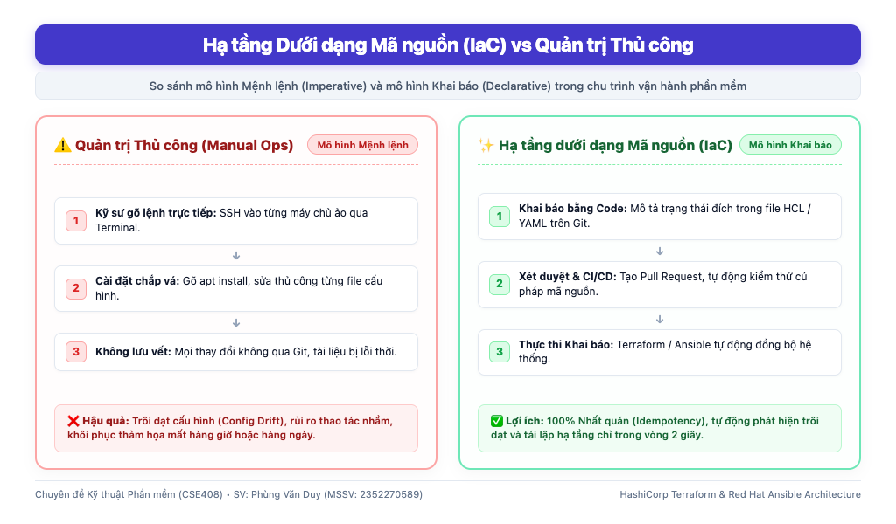
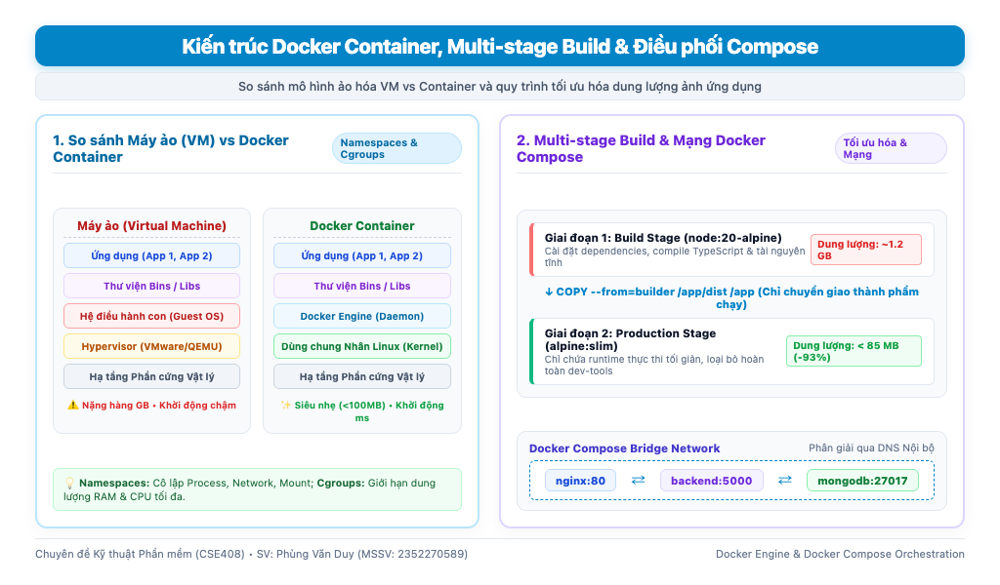
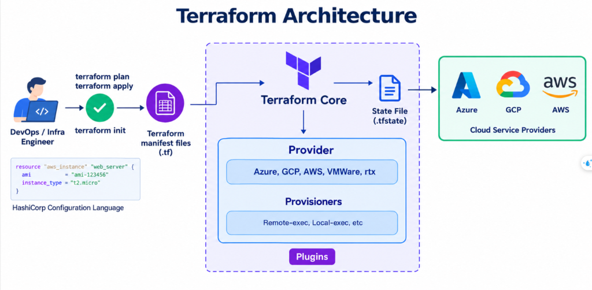
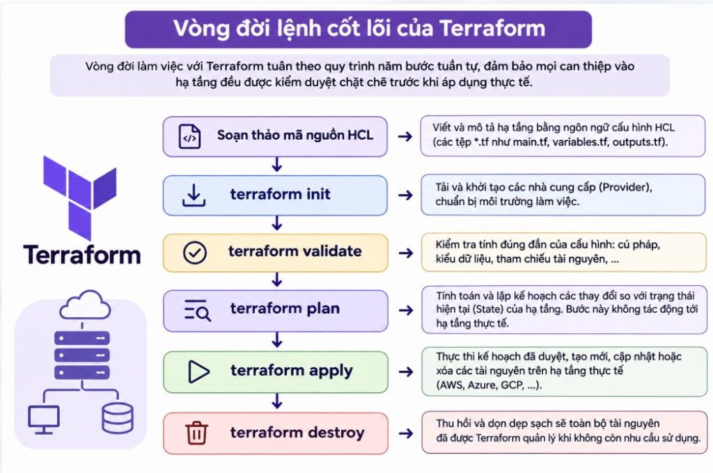
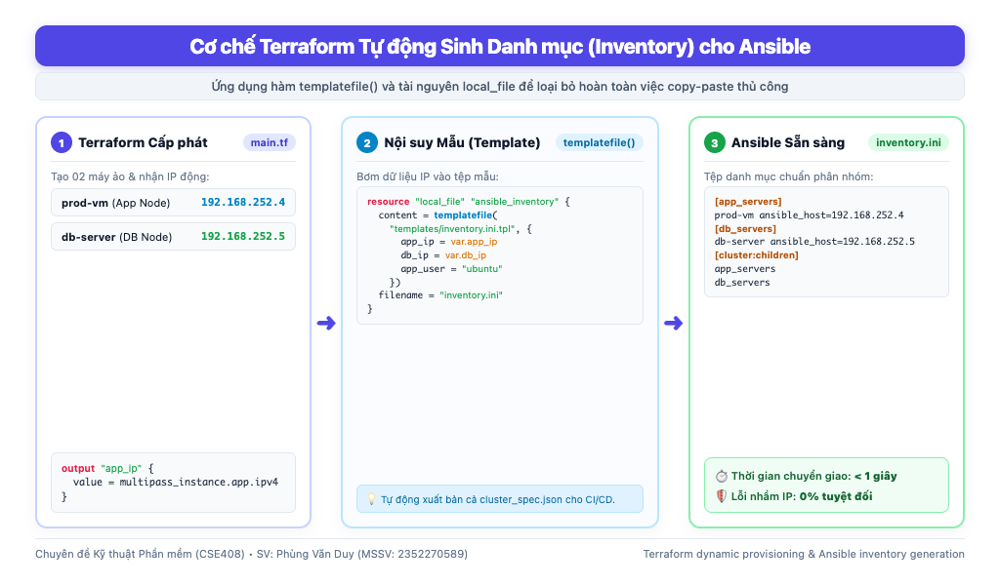
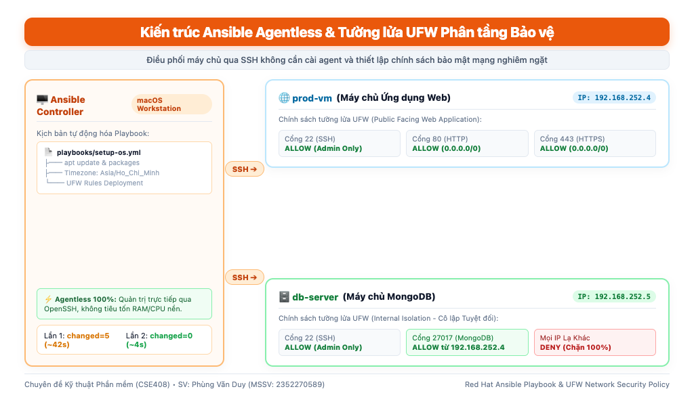

Gõ lệnh chắp vá trên terminal khiến môi trường Dev và Production bị sai lệch, dẫn tới lỗi *"máy tôi chạy bình thường, sao lên server lại sập?"*.
Kỹ sư mất hàng giờ hoặc hàng ngày để cài đặt từng gói phần mềm, phân quyền và mở cổng mạng thủ công khi cần mở rộng máy chủ.
Chỉ cần gõ nhầm một ký tự cấu hình hoặc mở sai luật tường lửa có thể làm lộ cơ sở dữ liệu hoặc sập toàn bộ dịch vụ.
Khi máy chủ gặp sự cố phần cứng, việc dựng lại hoàn toàn phụ thuộc vào trí nhớ cá nhân hoặc tài liệu hướng dẫn đã lỗi thời.
Cấp phát máy chủ ảo, CPU, RAM và định danh IP động qua mã nguồn HCL.
Chuẩn hóa OS, cài gói phần mềm và cấu hình bảo mật tường lửa UFW qua SSH.
Đóng gói cô lập ứng dụng, chia sẻ chung nhân Linux, chạy đồng nhất mọi nơi.
Tự động kiểm thử, đóng gói image và kích hoạt cập nhật máy chủ khi có git push.

nginx ⇄ backend ⇄ mongodb) mà không cần hardcode IP.

terraform fmt: Căn chỉnh chuẩn hóa mã nguồn HCL.terraform init: Tải provider plugins và khóa phiên bản.terraform validate: Kiểm tra tính đúng đắn cú pháp.terraform plan: Dự báo chính xác thay đổi (+ / ~ / -).terraform apply: Áp dụng thực tế vào cụm máy ảo.
inventory.ini.tpl và xuất file bằng tài nguyên local_file.
prod-vm (App): Mở cổng 80 & 443 ra ngoài Internet.
db-server (DB): Cổng 27017 CHỈ MỞ RIÊNG cho prod-vm, chặn 100% IP lạ.
changed=5) ➔ Lần 2 chỉ mất ~4s (changed=0).
| Tiêu chí đo lường | Phương pháp Thủ công (Manual) | Tự động hóa (Terraform & Ansible) | Mức độ cải thiện |
|---|---|---|---|
| Thời gian tạo cụm máy chủ | 15 - 20 phút (gõ lệnh, chờ mạng) | ~46 giây (1 lệnh terraform apply) | Nhanh hơn ~95% |
| Chuyển giao thông tin IP | 2 - 3 phút copy/paste bằng tay | < 1 giây (qua templatefile) | Tức thì, 0% lỗi |
| Cấu hình OS & Tường lửa | 10 - 15 phút gõ từng terminal | ~42s (lần 1) và ~4s (lần 2) | Nhanh hơn ~90% |
| Phát hiện & Sửa trôi dạt | Hàng giờ kiểm tra thủ công | < 2 giây (tự phát hiện & chữa lành) | Tự phục hồi tức thì |
| Tính nhất quán khi chạy lại | Dễ xung đột lệnh, trùng port | 100% nhất quán (changed=0) | Độ tin cậy tuyệt đối |
Viết Playbook Ansible tự động cài đặt Docker Engine và Docker Compose V2 chính thức từ Docker Repo trên prod-vm; cấu hình Nginx Reverse Proxy điều phối luồng truy cập.
Xây dựng kịch bản GitHub Actions tự động kiểm thử mã nguồn, đóng gói Docker Image và kích hoạt cập nhật máy chủ khi có git push; đo lường kịch bản triển khai không gián đoạn.
Hoàn chỉnh toàn văn báo cáo 5 chương theo đúng chuẩn học thuật của Nhà trường; chuẩn bị kịch bản demo trực tiếp trước Hội đồng chấm chuyên đề.
Em rất mong nhận được những góp ý và nhận xét quý báu từ ThS. Nguyễn Thọ Thông để hoàn thiện đề tài trong các giai đoạn tiếp theo.